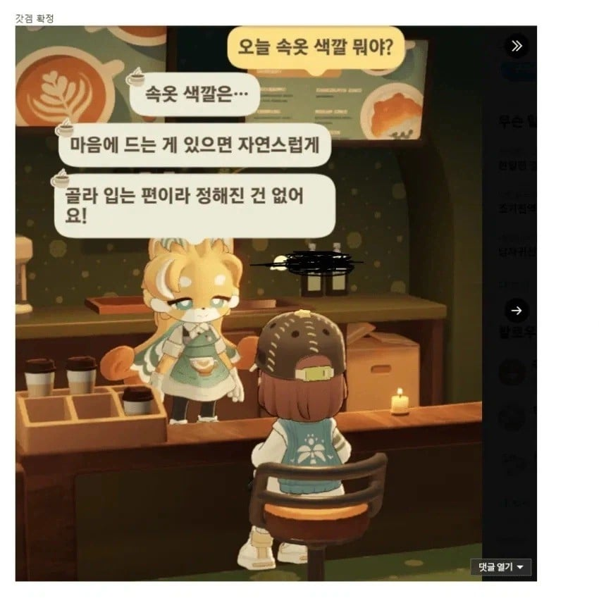
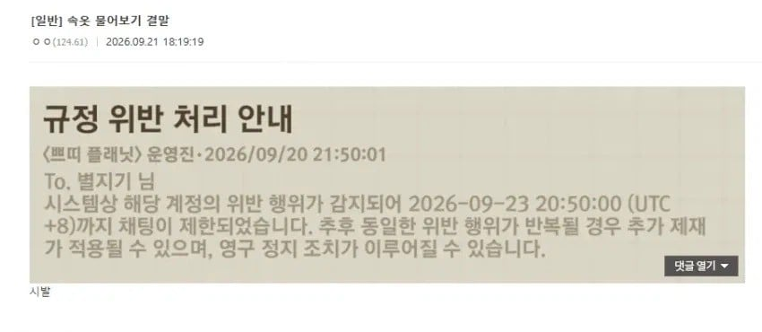

우우 퍼리충새끼
그래서 지금은 안입었다는거야?
npc가 ai로 대답해주는건가?
ㅇㅇ 마즘
Npc가 ai임?
뭔 겜임?
쁘띠플래닛 아직 정식출시는 안함
호요버스에서 만들고 있는 퍼리동숲
쁘띠플래닛
곧 정출할듯
중출!
이상하다 동숲도 이미 죄다 퍼리들 아닌가
퍼리가 단순히 동물이 아니라 거기서 한발 더 나가야되는건가?
더 노골적으로 꼴리는 퍼리버전 동숲
??? : 동숲도 충분히 노골적인데???
나는 아바에서 팀킬버그랑 내가 방장일때
겜시작 누르면 16명 꽉차있을때 전부다 겜 튕기는 버그
쓰다가 영구정지 당했는데 저정도는 존나 양호하지
옛날에 게임에서 핵쟁이들 때문에 자유게시판 곱창났을 때
개 잘풀린 판 클립몇개 + 이미지들 포토샵으로 주작해서 자게에 나 핵쟁이인데 절대 안잡히고 게임사도 정지할생각없음ㅋㅋ 이러면서 며칠동안 분탕질치다가 겜 재미없어서 접었음
몇달뒤에 섭종하더라 ㅋㅋㅋㅋㅋ
아바 커뮤에서 키배뜨다가 영정맥이던데 ㅋㅋㅋㅋㅋㅋ
헨타이!!
마음에 드는게 없으면 안입는다구?
저건 뭘 위반한거지 ai에게 성적 수치심을 줬다는건가
진짜 몰라서 물음
규정을 위반했다고 써있음
헉
오팬무 금지